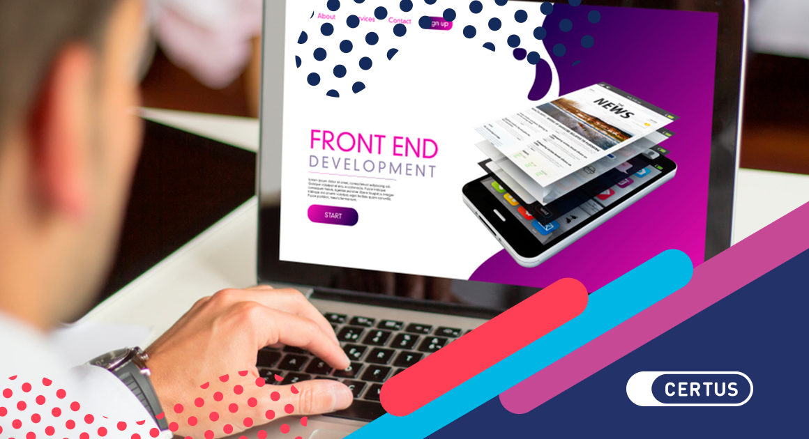

El desarrollo frontend se centra en crear interfaces visualmente
atractivas e interactivas con las que los usuarios interactúan directamente.
Combina principios de diseño con habilidades de programación para construir
sitios web y aplicaciones que sean responsivos, accesibles y fáciles de usar.
